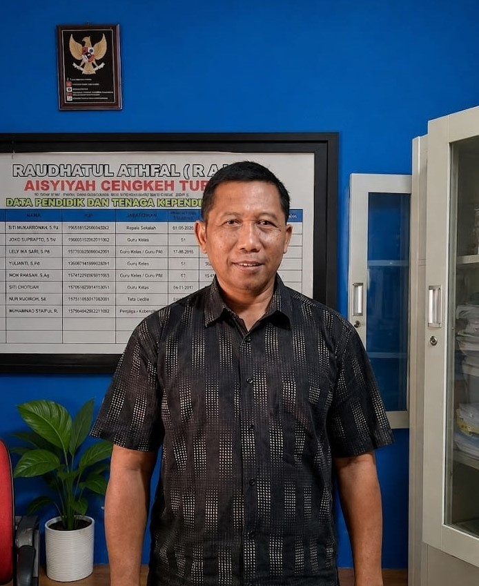
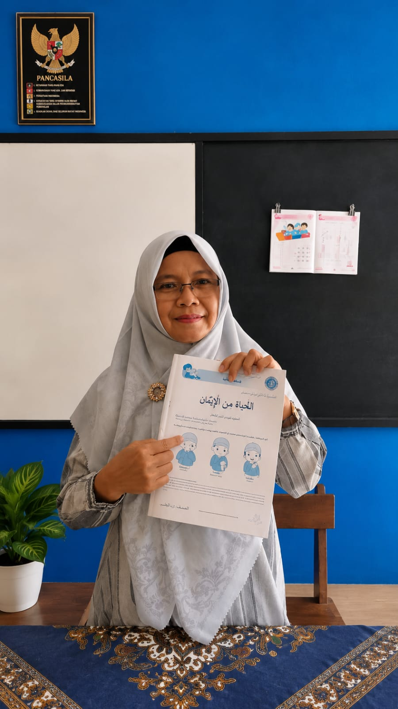
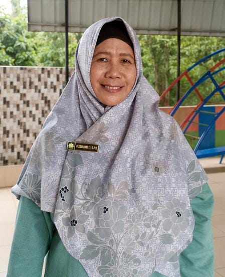
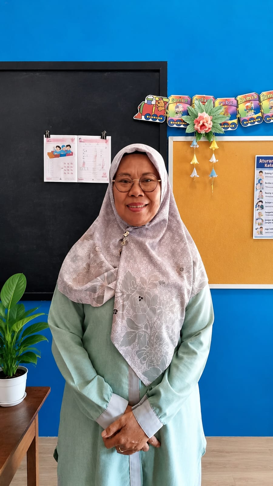
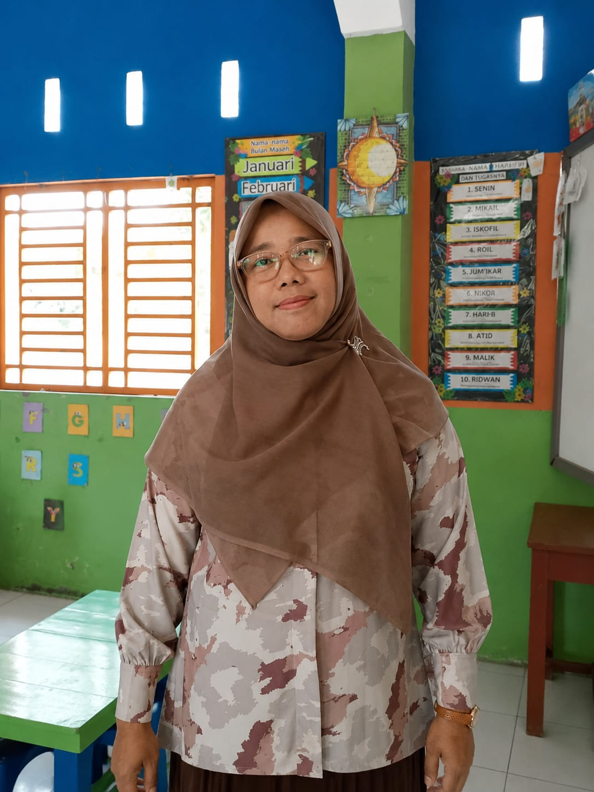
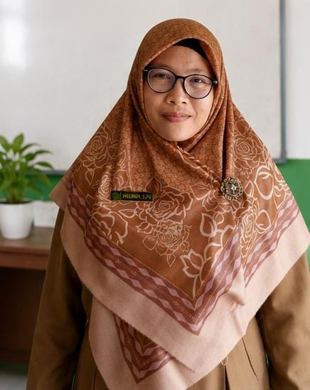
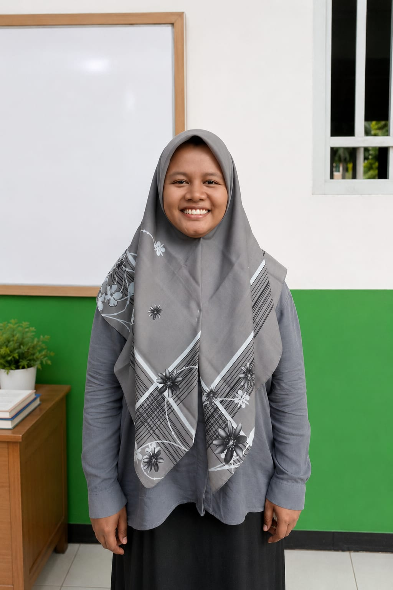
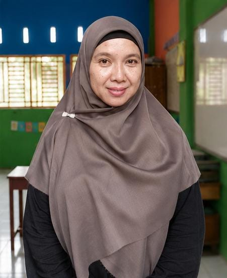

Kepala Sekolah RA Aisyiyah
NUPTK: 4144744646200023
Cengkeh Turi, 12 Agustus 1966
"Mendidik anak dengan hati, menanamkan akhlak sejak dini untuk generasi Islami yang cerdas dan mandiri."

Guru Kelas
NUPTK: 2438755656210053
Binjai, 06 November 1977

Guru Kelas
NUPTK: 2055747652300003
Cengkeh Turi Langkat, 25 Juli 1969

Guru Kelas
NUPTK: 4658747649300052
Cengkeh Turi Langkat, 26 Maret 1969

Guru Kelas
NUPTK: 2639755657300062
Binjai, 7 Maret 1977

Guru Kelas
NUPTK: 2437754656210073
Medan, 5 November 1976
Guru Kelas
NUPTK: 3848748650300102
Cengkeh Turi, 16 Mei 1970

Guru Kelas
NUPTK: 1544755657300133
Binjai, 12 Desember 1977

Guru Kelas
NUPTK: 7044763664300063
Binjai, 12 Juli 1985